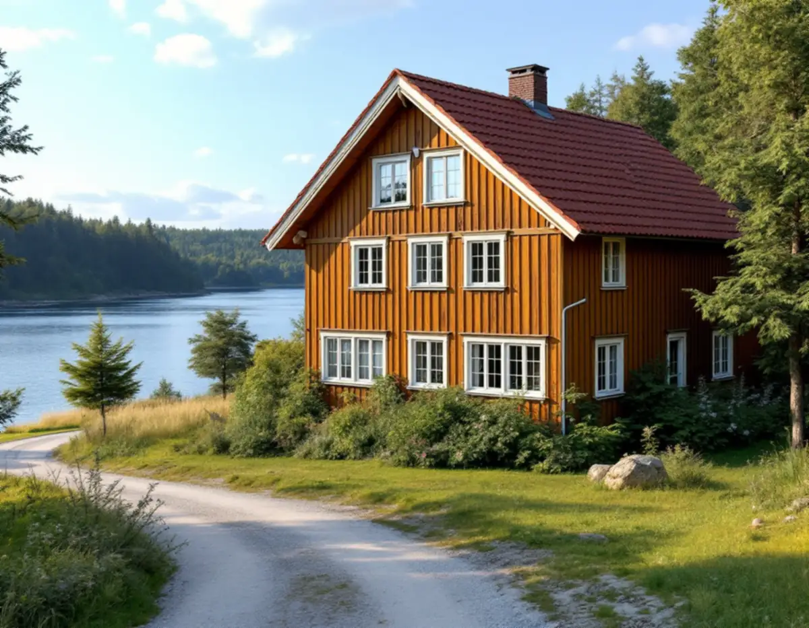
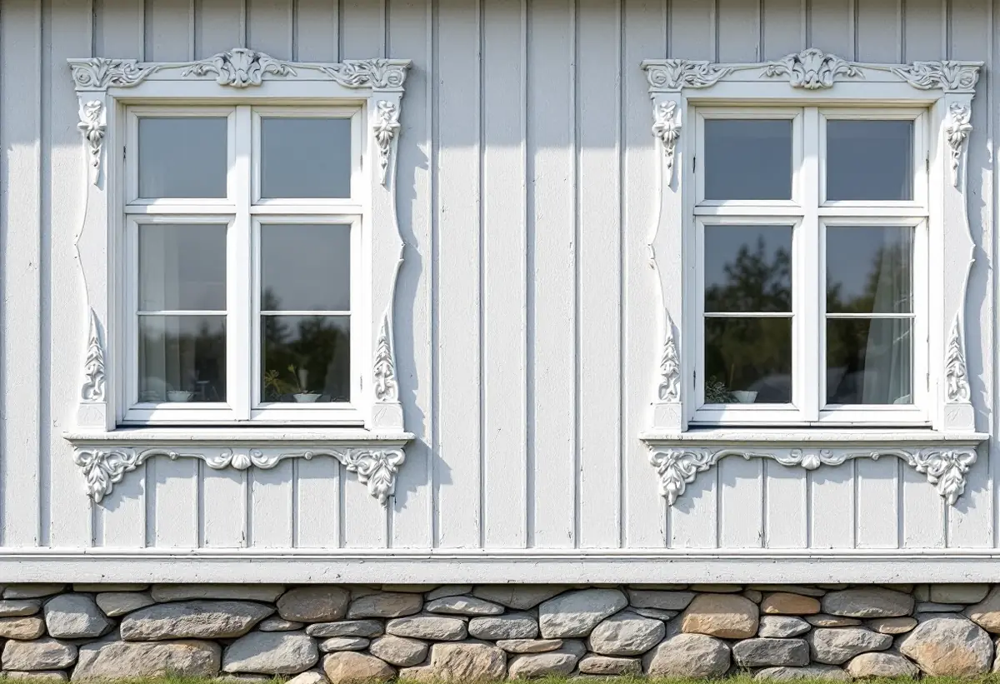

Kartor och plan
Vi tittar i kulturmiljökartan och detaljplanen efter q- och k-bestämmelser.
När ett fritidshusområde på Värmdö planläggs för permanentboende kan husen få nya bestämmelser i detaljplanen, och några blir skyddade. Då kan även vanligt underhåll av fasaden kräva en anmälan. Geal Entreprenad AB renoverar fasader på Ingarö, i Gustavsberg, Hemmesta och övriga Värmdö kommun, med gratis platsbesök och skriftligt kostnadsförslag.

Planbeskrivningen för området Fågelvik–Nykvarn på Ingarö, i granskningsversionen från juni 2023, berättar hur Aktiebolaget Ingarö Strand bildades 1909 och ägde bland annat Fågelviks gård. Huvudägaren James Funch började stycka av tomter för att sälja till sommargäster, och i sluttningen ner mot Lagnöström ligger flera av de villor som byggdes där, de flesta under 1910-talet.
De äldsta villorna beskrivs som en stilblandning av jugend och nationalromantik. De flesta är byggda i trä i en och en halv våning, med träpanel och huvudsakligen brutna, tegelklädda sadeltak. Vissa är välbevarade medan andra har förändrats mycket, och under 1950- och 60-talen tillkom mindre fritidshus. Den smala grusvägen längs vattnet är den planerade strandpromenaden, som minner om planerna på en villastad likt Saltsjöbaden.
Majoriteten av bebyggelsen i planområdet har träfasad. På en villa av den här åldern är det ofta de ursprungliga panelbrädorna och foderna som bär karaktären, och de går i många fall att laga bräda för bräda.

I planförslaget har de kulturhistoriskt intressanta byggnaderna värderats i en tregradig skala: blå för särskilt värdefulla, grön för högt och gul för visst kulturhistoriskt värde. Blå och gröna byggnader får rivningsförbud. Byggnader med särskilda värden får skyddsbestämmelser, märkta q, och byggnader med höga kulturmiljövärden får varsamhetsbestämmelser, märkta k.
Planbeskrivningen påpekar att byggnader som omfattas av skyddsbestämmelser kräver en anmälan vid underhåll. Värmdö kommun skriver detsamma generellt: du behöver göra en anmälan och få startbesked om du ska underhålla en byggnad som är skyddad i detaljplan eller har särskilt bevarandevärde. Byggnadsminnen kräver dessutom tillstånd från länsstyrelsen.
För en fasadrenovering betyder det att tidplanen ska rymma kommunens handläggning. Kommunantikvarien ger råd och föreslår att du fotograferar fastigheten och mejlar innan du bestämmer dig. Gäller det även taket finns mer under takrenovering på Värmdö.
Syftet med planen för Fågelvik–Nykvarn är att anpassa området för permanentboende, och i ett hus som ska bebos året runt vill många tilläggsisolera. Boverket beskriver utvändig tilläggsisolering som ofta bäst för energi och fukt, men varnar för att den kan förändra huset: fönster och dörrar hamnar längre in, takfoten skjuter ut mindre och fasaden kan hänga ut över sockeln.
Boverket råder också att isolera i torrt väder för att inte stänga in fukt i väggarna, och konstaterar att det blir lönsammast när fasaden ändå ska göras om, till exempel när panelen byts. På en sommarvilla med profilerade foder och snickerier kan det vara bättre att isolera på insidan eller bara i vissa väggar.
I Fågelvik–Nykvarn reglerar planförslaget att lägsta grundläggningsnivå för huvudbyggnad är +2,7 meter (RH2000), eftersom havsnivån väntas stiga. För befintliga hus nära stranden är det ännu ett skäl att kontrollera sockeln och de nedersta brädorna. Ska snickerier som dörrar och fönster göras om finns snickare på Värmdö.
Värmdö kommun skriver att det inte krävs bygglov för fasadändring, nytt tak eller nya fönster på en- och tvåbostadshus. Ligger fastigheten däremot i ett kulturhistoriskt särskilt värdefullt område, eller är byggnaden särskilt värdefull, krävs bygglov även för ommålning, nytt tak, nya fönster, solceller och takfönster. Kommunen hänvisar till sin kulturmiljökarta för att kontrollera det.
Boverket förklarar att byte till samma material och utförande räknas som underhåll och inte som fasadändring. Ligger fastigheten inom strandskyddat område kan en åtgärd dessutom kräva strandskyddsdispens, påpekar kommunen. Läs mer om panel, puts och isolering på sidan om fasadrenovering.
Vi tittar i kulturmiljökartan och detaljplanen efter q- och k-bestämmelser.
Panel, foder, sockel och anslutningar gås igenom, och vi bedömer vad som kan lagas.
Lagning, byte och isolering redovisas som egna poster med material angivna.
Krävs anmälan eller bygglov planerar vi arbetet efter kommunens beslut.
Arbetet läggs i torra perioder, och logistiken planeras efter vägar och eventuell båttransport.
Vi går igenom fasaden tillsammans och visar vilka delar som har bytts.
Skatteverket räknar fasadarbeten, tilläggsisolering, fasadmålning och fönsterbyte som rotarbete i ett småhus. Avdraget gäller bara arbetskostnaden, inte material eller resor.
Det är 30 procent av arbetskostnaden, högst 50 000 kr per person och år och högst 75 000 kr tillsammans med rutavdrag. Geal drar avdraget direkt på fakturan.
Hur mycket originalpanel som kan sparas, om profiler och foder måste tillverkas, om huset ska isoleras och hur långt det är till närmaste väg. Skyddade hus kan kräva mer lagning och mindre byte. Platsbesöket är gratis och du får ett skriftligt kostnadsförslag.
Puts, panel och tilläggsisolering.
Fasadrenovering i Stockholm →Takbyte, takbesiktning och plåtarbeten.
Takläggare på Värmdö →Skärgård, vind och fritidshus.
Takrenovering på Värmdö →Fritidsområden, kulturmiljö och avlopp.
Attefallshus på Värmdö →Brunnsvatten, salt och eget avlopp.
Badrumsrenovering på Värmdö →Byggrätt, PFO-områden och strandskydd.
Byggföretag på Värmdö →Röd panel, vita snickerier och båthus i skärgårdsbyarna.
Fasadmålning på Värmdö →Gustavsbergs bevarandevärda fönster.
Fönsterbyte på Värmdö →Glasverandor och äldre fönster.
Fönsterrenovering på Värmdö →Fritidshus som blir permanentbostäder.
Golvläggare på Värmdö →Gamla brädgolv och skonsam slipning.
Golvslipning på Värmdö →Fritidshus, eget avlopp och Gustavsberg.
Köksrenovering på Värmdö →Skärgårdshus, fritidshus och bruksmiljö på Värmdö.
Målare på Värmdö →Plåttak och beslag på Värmdö.
Plåtslagare på Värmdö →Fritidshus som blir helårshus.
Snickare på Värmdö →Anmälan, kulturmiljö och tak i skärgårdsbyarna.
Takbyte på Värmdö →Riva eller spara tapetlagren.
Tapetsering på Värmdö →Fritidshusplaner och lovfria 30 m².
Tillbyggnad på Värmdö →VVS, varmvattnet och byggreglerna.
Totalrenovering på Värmdö →